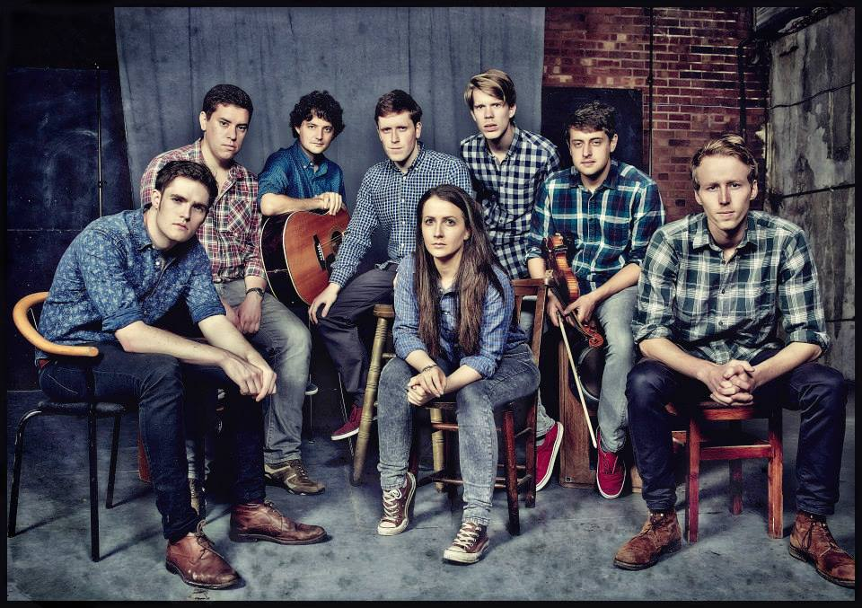

Do Not Adjust Your Stage (GBR)
The Wunderkammer
In the Wunderkammer, DNAYS improvise scenes, stories and characters
inspired by Ted-style talks from academics and all round huge brains
with a Q&A with the audience. Neither they, nor the audience, have
seen the talks before – every show is unique.
The Wunderkammer is one of London’s most popular improv comedy nights,
selling out consecutive monthly shows since Spring 2014 in residencies
at the Natural History Museum and The Nursery Theatre. Previous speakers
have included a cell biologist from King’s, a bubble scientist from the
National Physical Laboratory, a Cornish hip-hop guru, philosophers, a
medieval linguist, a Cambridge astrophysicist, Government economist, a
military historian, and a Guinness World Record holder.
It has been performed internationally at the Union Hall in Brooklyn
NYC.
Do Not Adjust Your Stage (DNAYS) are an award-winning London-based improv
comedy group. DNAYS have performed together since 2007, gigging
regularly in London, across the UK and beyond. Cast members have trained
with a broad range of improv schools including the UCB, iO, Second City,
Free Association and Monkey Toast. Following a European Tour in 2013,
DNAYS took to the USA with shows in 2014 and 2015 at the prestigious
Upright Citizens’ Brigade Theatre. Previous festival runs include
the Edinburgh Fringe, Amsterdam Impro Festival, Manchester Comedy
Festival, ImproFest UK, Improv Fest Ireland and Barcelona Improv
Festival. Their original show format, The Wunderkammer, bringing
together expert speakers and improv comedy, has performed to sell-out
audiences and critical acclaim in the UK and US since 2014, with
residencies at The Nursery and Natural History Museum in London
“Unmissable…Impressive, spontaneous, creative and hilarious.
Fearless comedy to great effect” (Everything Theatre, 2014)
As recommended by the Londonist, Twenty Something London, To-Do List and
Know London in 2014.
dnays.com
facebook.com/dnayscomedy
twitter.com/dnayscomedy
instagram.com/dnayscomedy/